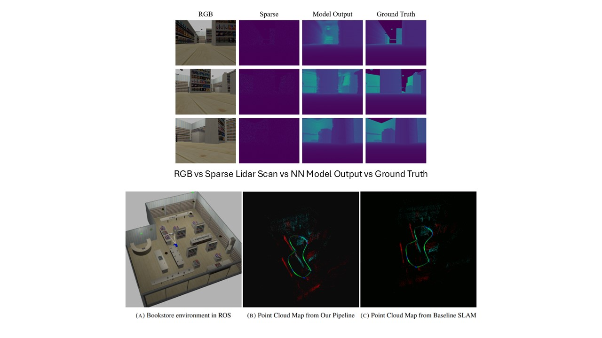

Depth Completion for RGB-D SLAM
A network that turns sparse LiDAR and a monocular camera into dense depth, used to improve ORB-SLAM2 accuracy.
CourseLearning in Robotics, University of Pennsylvania
Year2023
StackPyTorch, AWS, ORB-SLAM2

Problem
LiDAR gives accurate but sparse depth, and a monocular camera gives no depth at all. RGB-D SLAM works best with dense depth for every pixel.
Approach
- Trained a neural network on AWS that predicts dense depth from sparse LiDAR scans and camera images.
- Fed the completed depth into an RGB-D SLAM pipeline (ORB-SLAM2).
Result
Deep-learning depth completion improved SLAM accuracy. The model and pipeline were evaluated on real-world datasets (KITTI, TUM) and in a custom environment to check that they generalize.